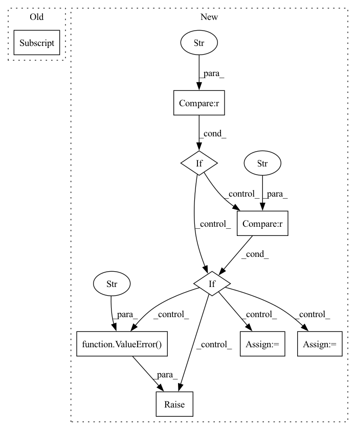

Pattern ID :22869
Before Change
self.rdm_counter = -1
def get_one_sample(self, rxn_smi: str) -> List[str]:
prod_smi = rxn_smi.split(">>")[-1]
rcts_smi = rxn_smi.split(">>")[0]
neg_rxn_smis = []
for i in range(self.num_neg):After Change
def get_one_sample(self, rxn_smi: str, **kwargs
) -> List[Union[str, sparse_fp]]:
if self.return_type == "smi" :
rcts_smi = rxn_smi.split(">>")[0]
neg_rxn_smis = []
for i in range(self.num_neg):
rdm_prod_idx = self.get_idx()
rdm_prod_smi = self.fp_to_smi_dict[rdm_prod_idx]
neg_rxn_smi = rcts_smi + ">>" + rdm_prod_smi
neg_rxn_smis.append(neg_rxn_smi)
return neg_rxn_smis
elif self.return_type == "fp" :
rcts_fp, prod_fp = rcts_prod_fps_from_rxn_smi(
rxn_smi, self.fp_type, self.smi_to_fp_dict, self.mol_fps
)
neg_rxn_fps = []
for i in range(self.num_neg):
rdm_prod_idx = self.get_idx()
rdm_prod_fp = self.mol_fps[rdm_prod_idx]
neg_rxn_fp = make_rxn_fp(rcts_fp, rdm_prod_fp, self.rxn_type)
neg_rxn_fps.append(neg_rxn_fp)
return neg_rxn_fps
else:
raise ValueError(f"return_type {self.return_type} not supported for Bit Augmentor!" )
def get_idx(self) -> int:
self.rdm_counter += 1
self.rdm_counter %= self.mol_fps.shape[0]In pattern: SUPERPATTERN
Frequency: 4
Non-data size: 9
Instances Fragment ID: 72713301
Project Name: coleygroup/rxn-ebm
Commit Name: 98a06e3339135985ba0e940c6a448faf78cf95cd
Time: 2020-12-14
Author: siriuself1103@gmail.com
File Name: rxnebm/data/augmentors.py
M Class Name: Random
N Class Name: Random
M Method Name: get_one_sample(2)
N Method Name: get_one_sample(2)
M Parent Class: Augmentor
N Parent Class: Augmentor
M File Name: rxnebm/data/augmentors.py
N File Name: rxnebm/data/augmentors.py
M Start Line: 343
M End Line: 353
N Start Line: 357
N End Line: 384
Before Change
// Match the order
gt_updated["outlines"], gt_permutation, leading_edges = self._panel_order_match(
preds["outlines"], ground_truth["outlines"].to(self.device), ground_truth["num_panels"], ground_truth["num_edges"] )
// Update other info according to the permutation
gt_updated["num_edges"] = self._feature_permute(After Change
gt_updated = {}
// Match the order
if self.config["order_by"] == "placement" :
if "translations" not in preds or "rotations" not in preds :
raise ValueError("ComposedPatternLoss::Error::Ordering by placement requested but placement is not predicted" )
pred_placement = torch.cat([preds["translations"], preds["rotations"]], dim=-1)
gt_placement = torch.cat([ground_truth["translations"], ground_truth["rotations"]], dim=-1)
gt_permutation = self._panel_order_match(pred_placement, gt_placement, ground_truth["num_panels"])
else: Fragment ID: 72713333
Project Name: maria-korosteleva/garment-pattern-estimation
Commit Name: 21b27844e4f885b3020971a4d56b516d450eb135
Time: 2021-04-30
Author: mariako@kaist.ac.kr
File Name: nn/metrics.py
M Class Name: ComposedPatternLoss
N Class Name: ComposedPatternLoss
M Method Name: _gt_order_match(4)
N Method Name: _gt_order_match(4)
M Parent Class:
N Parent Class:
M File Name: nn/metrics.py
N File Name: nn/metrics.py
M Start Line: 773
M End Line: 809
N Start Line: 775
N End Line: 821
Before Change
loss = F.mse_loss(Y_hat, y, reduction="none")
if not is_sum_over_tasks:
n_tasks = prod(Y_hat[0, 0, ...] .shape)
loss = loss / n_tasks // takes an average over tasks
batch_size = loss.size(0)After Change
loss = loss.view(batch_size, Y_dim, -1).mean(keepdim=False, dim=1)
// shape = [batch_size, 1]
if agg_over_tasks == "mean" :
loss = loss.mean(keepdim=True, dim=1)
elif agg_over_tasks == "max" :
loss = loss.max(keepdim=True, dim=1)[0]
elif agg_over_tasks == "sum":
loss = loss.sum(keepdim=True, dim=1)
elif agg_over_tasks == "std":
loss = loss.std(keepdim=True, dim=1)
elif agg_over_tasks is None:
loss = loss // shape = [batch_size, n_tasks]
else:
raise ValueError(f"Unkown agg_over_tasks={agg_over_tasks}." )
return loss
Fragment ID: 72713296
Project Name: yanndubs/lossyless
Commit Name: c8ef0b6b635ba0e212baf30a60596f78e08a56fa
Time: 2021-02-22
Author: yanndubois96@gmail.com
File Name: lossyless/helpers.py
M Class Name: AnonimousClass
N Class Name: AnonimousClass
M Method Name: mse_or_crossentropy_loss(4)
N Method Name: mse_or_crossentropy_loss(4)
M Parent Class:
N Parent Class:
M File Name: lossyless/helpers.py
N File Name: lossyless/helpers.py
M Start Line: 437
M End Line: 442
N Start Line: 444
N End Line: 465
Before Change
def test_integration(dataloaders_fixed_window, tmp_path, gpus):
train_dataloader = dataloaders_fixed_window["train"]
val_dataloader = dataloaders_fixed_window["val"]
test_dataloader = dataloaders_fixed_window["test"]
early_stop_callback = EarlyStopping(monitor="val_loss", min_delta=1e-4, patience=1, verbose=False, mode="min")After Change
gpus,
dataloader,
):
if dataloader == "with_covariates" :
dataloader = dataloaders_with_covariates
elif dataloader == "fixed_window_without_covariates" :
dataloader = dataloaders_fixed_window_without_covariates
elif dataloader == "multi_target":
dataloader = dataloaders_multi_target
else:
raise ValueError(f"dataloader {dataloader} unknown" )
_integration(dataloader, tmp_path=tmp_path, gpus=gpus)
@pytest.fixture(scope="session") Fragment ID: 72713243
Project Name: jdb78/pytorch-forecasting
Commit Name: 4502e81dd8dbb8ec33fbde0efcdda8c4ad701b7f
Time: 2022-03-21
Author: beitner.jan@bcg.com
File Name: tests/test_models/test_nhits.py
M Class Name: AnonimousClass
N Class Name: AnonimousClass
M Method Name: test_integration(6)
N Method Name: test_integration(3)
M Parent Class:
N Parent Class:
M File Name: tests/test_models/test_nhits.py
N File Name: tests/test_models/test_nhits.py
M Start Line: 13
M End Line: 57
N Start Line: 64
N End Line: 78